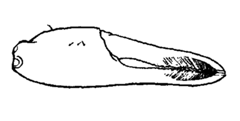
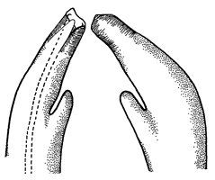

Fiddler Crabs
Uca tomentosa
Matted Fiddler Crab
Type
Information
Photos
Video
Art
References
Species List
Type Description
Uca tomentosa
Crane, J. (1941) Eastern Pacific Expeditions of the New York Zoological Society. XXVI. Crabs of the genus
Uca
from the west coast of Central America.
Zoologica NY
26:145–208.
Information
Subgenus
Leptuca
Common Names
Matted Fiddler Crab
Synonyms, Alternate Spellings, & Name Forms
Leptuca mertensi
,
Uca (Celuca) tomentosa
,
Uca (Minuca) mertensi
,
Uca mertensi
,
Uca tomentosa
Geographic Range
Eastern Pacific: El Salvador to northern Peru
Download SVG line map of ranges.
Map data derived from:
Abele & Kim (1989)
;
Crane (1975)
External Links
Encyclopedia of Life
Wikipedia
iNaturalist
GBIF
Photos
No pictures available at this time.
Video
No videos available at this time.
Art


References
Altevogt, R. (1969) Ein sexualethologischer Isolationsmechanismus bei sympatrischen
Uca
-Arten (Ocypodidae) des Ostpazifik.
forma et functio
1:238–249. {An ethological reproductive isolation mechanism in sympatric species of
Uca
(Ocypodidae) of the Eastern Pacific}
Altevogt, R. (1970) Form und Funktion der vibratorischen Signale von
Uca tangeri
und
Uca inaequalis
(Crustacea, Ocypodidae).
forma et functio
2:178–187. {Form and function of vibrational signals in
Uca tangeri
and
Uca inaequalis
(Crustacea, Ocypodidae)}
Altevogt, R. (1972) Physiological inter-relations of display and locomotion in fiddler crabs: An evolutionary aspect.
Journal of the Marine Biological Association of India
14(2):456–467.
Barnwell, F.H., and W.A. Szelistowski (1985) Twenty-one species of fiddler crabs (genus
Uca
) from a small tidal river on the Pacific coast of Costa Rica.
American Zoologist
25(4):86A.
Bott, R. (1954) Dekapoden (Crustacea) aus El Salvador. 1. Winkerkrabben (
Uca
).
Senckenbergiana biologica
35(3–4):155–180.
Bott, R. (1973) Die verwandtschaftlichen Beziehungen der
Uca
-Arten (Decapoda: Ocypodidae).
Senckenbergiana biologica
54(4–6):315–325.
Crane, J. (1941) Eastern Pacific Expeditions of the New York Zoological Society. XXVI. Crabs of the genus
Uca
from the west coast of Central America.
Zoologica NY
26:145–208.
Crane, J. (1947) Eastern Pacific expeditions of the New York Zoological Society. XXXVIII. Intertidal brachygnathous crabs from the west coast of tropical America with special reference to ecology.
Zoologica
32(2):69–95.
Crane, J. (1975)
Fiddler Crabs of the World: Ocypodidae: Genus Uca
. Princeton, NJ: Princeton University Press.
von Hagen, H.-O. (1968) Studien an peruanischen Winkerkrabben (
Uca
).
Zoologische Jahrbücher. Abteilung für Systematik, Ökologie und Geographie der Tiere
95(2):395–468. {Studies of Peruvian fiddler-crabs (
Uca
)}
von Hagen, H.-O. (1970) Anpassungen an das spezielle Gezeitenzonen-Niveau bei Ocypodiden (Decapoda, Brachyura).
forma et functio
2:361–413. {Adaptations to the special intertidal level of habitat in Ocypodid crabs (Decapoda, Brachyura)}
von Hagen, H.-O. (1970) Verwandtschaftliche Gruppierung und Verbreitung der Karibischen Winkerkrabben (Ocypodidae, Gattung
Uca
).
Zoologische Mededelingen
44(15):217–235.
{kind=link}